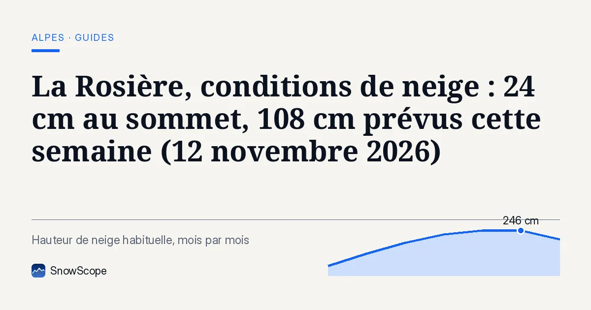
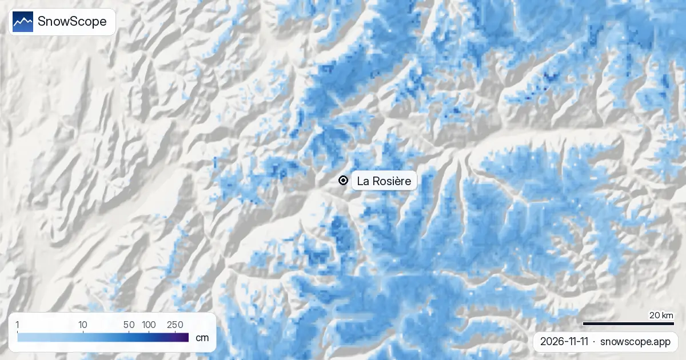

La Rosière, conditions de neige : 24 cm au sommet, 108 cm prévus cette semaine (12 novembre 2026)
La Rosière se dresse haut à la frontière France–Italie, ses pentes supérieures retenant encore 24 cm des chutes précoces de novembre. La semaine à venir apporte un tournant majeur : la prévision montre 108 cm qui s'accumulent au sommet (2 799 m) et 61 cm à mi-montagne (1 995 m), bien que le village reste à l'ombre de son exposition propre face au sud.
Consultez les prévisions neige en temps réel pour La Rosière sur l'application SnowScopeHauteurs de neige, alertes poudreuse et carte 3D, gratuitement.

Ce que vous voyez maintenant le 11 novembre
Le sommet de La Rosière porte 24 cm, gagnés surtout la semaine passée—7 cm sont tombés en 48 heures seulement. Mi-montagne n'a rien de mesurable aujourd'hui malgré 9 cm reçus sur les mêmes sept jours ; le soleil et le sol ont mangé la fine neige précoce à cette altitude plus basse. Le village est à nu.
Sur les pentes réelles, une couloir orienté nord retiendra plus qu'une piste ensoleillée selon la profondeur complète indiquée ici, et la neige de début de saison est assez fine que les rochers peuvent percer.
Sept jours de neige devant nous
Sur les sept jours complets, 108 cm sont attendus au sommet, 61 cm à mi-montagne et 4 cm au village. Les deux premiers jours sont la partie la plus fiable de cette prévision ; au-delà, la direction importe plus que le total exact.
La Thuile, partenaire italienne de La Rosière de l'autre côté du col du Petit-Saint-Bernard, se situe habituellement dans le même système météorologique et verra une accumulation similaire.
Neige de novembre les hivers passés
Sur 46 hivers la première neige atteint le sommet le 28 septembre, mi-montagne le 12 octobre et le village le 22 octobre. Un novembre typique laisse 51 cm au sommet, 21 cm à mi-montagne et 11 cm au village. Le manteau actuel est en dessous de la normale partout, mais la prévision inverserait cela d'ici la semaine prochaine.
Le motif s'intensifie généralement à travers l'hiver : décembre ajoute habituellement 119 cm au sommet et 64 cm à mi-montagne. Février devient le mois le plus enneigé au village (94 cm de moyenne), tandis que mars et avril culminent plus haut (153 cm et 246 cm à mi-montagne et sommet respectivement).

Pourquoi le village tient mieux la neige que vous ne l'attendriez
Pour une station orientée sud à 1 192 m, la neige du village de La Rosière est étonnamment durable. La plupart des hivers (9 sur 10), il y a sept semaines distinctes où 50 cm ou plus y gisent. La semaine 9, autour de fin février, atteint 101 cm un hiver typique. Les médianes maximales sur les 46 hivers sont 117 cm au village, 182 cm à mi-montagne et 306 cm au sommet. L'hiver dernier en a été proche : 140, 203 et 295 cm respectivement.
Le terrain cartographié s'étend sur 68 km de pistes et 29 remontées entre 1 192 m et 2 799 m, partageant le domaine avec La Thuile de l'autre côté de la frontière.
Lire cette prévision
Un total sur sept jours de 108 cm au sommet est un grand nombre et porte de l'incertitude. Les premières 48 heures—autour de 37 cm au sommet—sont les plus fiables sur lesquels compter. Au-delà, le vent redistribuera la neige, particulièrement sur les hauts crêtes, la déplaçant dans les couloirs où elle s'accumule plus vite.
La neige de début de saison est différente de la neige en plein hiver : le sol dessous est plus chaud et peut encore tasser ou fondre légèrement ; les rochers peuvent percer la surface ; et les flocons précoces sont souvent légers et de faible densité. Préparez-vous pour la tempête, mais ne supposez pas que chaque centimètre reste où il tombe.
Conseils aux skieurs
- Tenez les premières 48 heures de la prévision (autour de 20 cm au sommet) comme votre point d'ancrage pour la planification. Les 108 cm complets sont possibles mais moins certains.
- Le village restera probablement à nu ou presque cette semaine—montez à mi-montagne ou plus haut pour trouver la neige nouvelle.
- Avant toute descente hors-piste, consultez le bulletin d'avalanche Météo-France : 100 cm de neige nouvelle en une semaine crée une instabilité sérieuse.
- Le vent sur les hauts crêtes déplacera la neige nouvelle dans les couloirs et pentes sous le vent ; cherchez le terrain ombragé si les rochers percent encore le manteau précoce.
- Le calendrier de La Rosière contrôle quand les remontées ouvrent ; la carte SnowScope montre la profondeur de neige, pas le statut opérationnel.
À propos de ces chiffres
Les hauteurs de neige des stations sont la neige la plus épaisse sur le haut du domaine à la date indiquée ; ce sont des estimations pour une zone, pas une mesure en un point. Les prévisions peuvent changer. Consultez toujours le bulletin d'avalanche officiel avant le hors-piste.
Bulletins d'avalanche officiels: Météo-France – Bulletin d'estimation du risque d'avalanche
Citer ce bulletin
Pour la recherche, l'enseignement ou la presse : chiffres et graphiques réutilisables librement sous CC BY 4.0 avec cette citation.
SnowScope (2026), La Rosière, conditions de neige : 24 cm au sommet, 108 cm prévus cette semaine (12 novembre 2026), https://snowscope.app/blog/fr/2026/11/la-rosiere-snow-conditions-12-november-2026.html, consulté le 2026-11-12
SnowScope (Atlas Labs). (2026, November 12). La Rosière, conditions de neige : 24 cm au sommet, 108 cm prévus cette semaine (12 novembre 2026). SnowScope snow reports. https://snowscope.app/blog/fr/2026/11/la-rosiere-snow-conditions-12-november-2026.html
BibTeX
@misc{snowscope2026larosieresnowconditions1,
author = {{SnowScope (Atlas Labs)}},
title = {La Rosière, conditions de neige : 24 cm au sommet, 108 cm prévus cette semaine (12 novembre 2026)},
year = {2026},
month = nov,
howpublished = {\url{https://snowscope.app/blog/fr/2026/11/la-rosiere-snow-conditions-12-november-2026.html}},
note = {Published 2026-11-12 09:53 UTC; accessed 2026-11-12}
}· CC BY 4.0 · Méthodes, données et outils →
La Rosière : neige et température selon l'altitude, cet hiver vs l'hiver dernier (outils) →
Suivre La Rosière
Gratuit : un message quand la neige arrive, et la météo chaque matin.
Autres bulletins neige

50 cm en haut du domaine : voilà pourquoi La Grave est en tête de notre liste. Nous avons combiné la hauteur de neige du jour, la neige fraîche des …
Saas-Fee est sans voitures : le train jusqu'à Viège et le CarPostal 511, la route de la vallée du Rhône et les trains autos, les parkings et bus gratuits.

Notre série de 46 hivers dans les Alpes, 108 points de 667 à 3 872 m : moins de jours de neige partout, nettement à 81 %. Ce qui a changé et pourquoi.